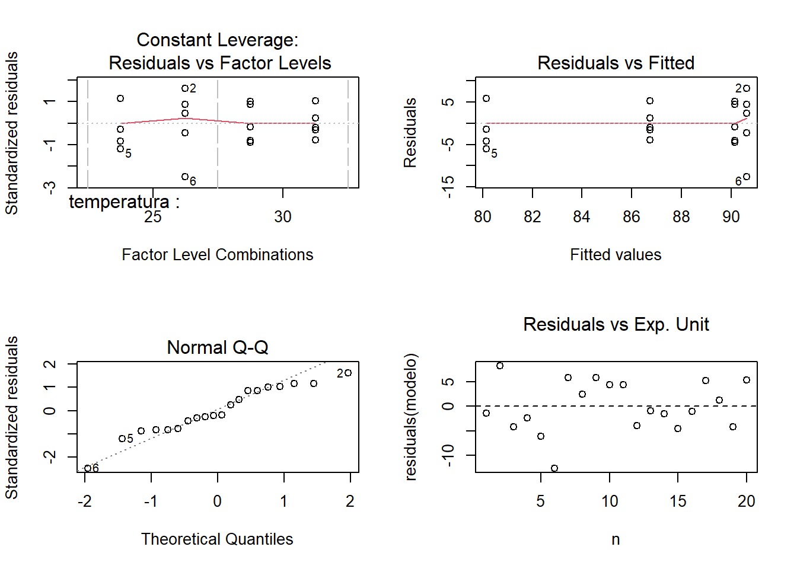
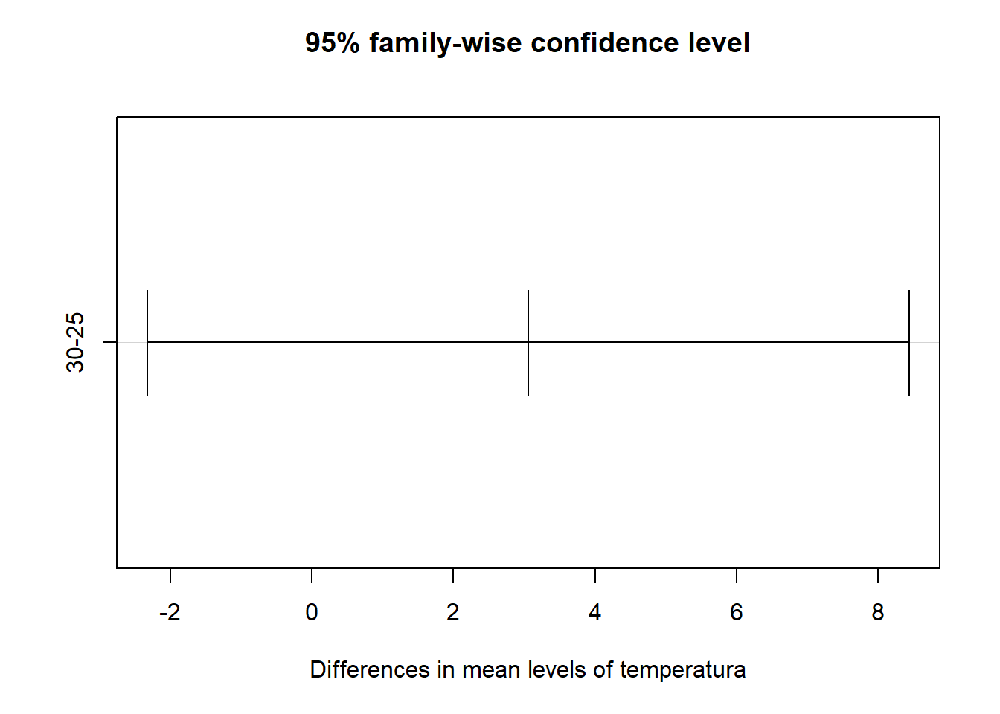
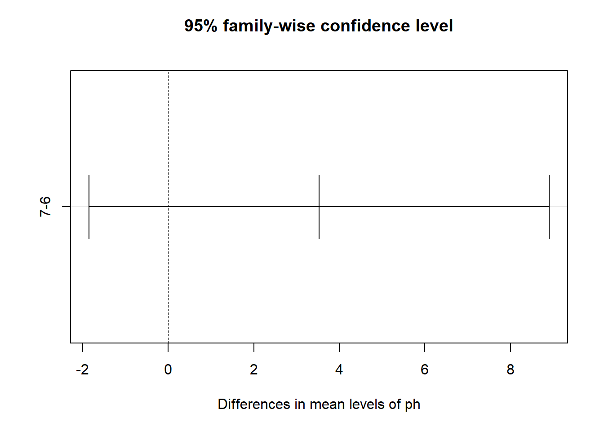
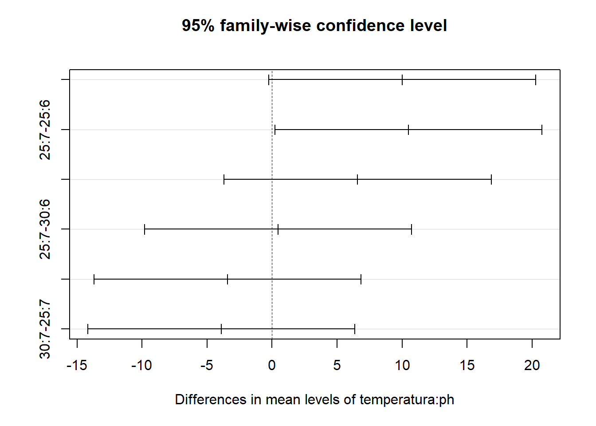

Plantear adecuadamente los componentes del modelo matemático de un experimentos factorial aplicado a un DCA y a un DBCA.
Desarrollar destrezas técnicas en el manejo de software estadístico para el análisis de datos experimentales.
Realizar el analisis estadistico de un experimento factorial. Interpretar y comunicar correctamente los resultados del analísis estadístico.
Evaluar la confiabilidad de los resultados experimentales.
1.2 INTRODUCCION
Los experimentos factoriales son un tipo de diseño experimental en el cual se estudian los efectos de dos o más factores en una variable de interés. En este tipo de experimentos, se manipulan de manera simultánea y combinada los diferentes niveles de los factores para determinar cómo interactúan entre sí y cómo influyen en la variable de respuesta.
La principal ventaja de los experimentos factoriales es que permiten estudiar el efecto de múltiples factores al mismo tiempo, lo que permite ahorrar tiempo y recursos en comparación con realizar experimentos individuales para cada factor. Además, los experimentos factoriales también permiten estudiar las interacciones entre los factores, es decir, cómo el efecto de un factor puede depender del nivel de otro factor.
1.3 EJEMPLO 7 ~ EFECTO DE LA TEMPERATURA Y PH
El objetivo de este estudio es evaluar los efectos combinados de la temperatura y el pH en la tasa de germinación de las semillas de Cedrela sp.
Diseño experimental: Se usara un experimento factorial de dos factores para investigar cómo la temperatura y el pH influyen en la germinación de las semillas. Los factores son la temperatura (dos niveles: 25°C y 30°C) y el pH (dos niveles: 6 y 7). Cada combinación de temperatura y pH se repetirá cinco veces, dando como resultado un total de 20 unidades experimentales.
Recopilación de datos: se coloca 30 semillas para cada tratamiento en placas de Petri separadas, manteniendo la temperatura y los niveles de pH designados. Se cuenta y registra el número de semillas germinadas después de un período de tiempo fijo (2 semanas). Se calcula el porcentaje de germinación para cada tratamiento como la proporción de semillas germinadas con respecto al número total de semillas plantadas.
1.3.1 OBJETIVO
Evaluar los efectos combinados de la temperatura y el pH en la tasa de germinación de las semillas de Cedrela sp.
Diseño experimental: Se usara un diseño factorial 2 \times 2 = 4 tratamientos
1.3.2 ALEATORIZACION
Se aleatoriza las cajas de Petri que corresponden a las combinaciones de factores o tratamientos.
1.3.3 UNIDADES EXPERIMENTALES
Son cada una de las cajas de Petri que tiene la combinacion de los factores temperatura y pH.
1.3.4 UNIDADES DE OBSERVACION
Cada grupo de 30 semillas que se ‘sembraron’ en las cajas de Petri.
1.3.5 VARIABLE RESPUESTA
Cantidad de semillas germinadas por caja de Petri.
y_{ijk} son las observaciones de semillas germinadas. \mu es la media general de todas las observaciones. \alpha_i es el efecto del i-ésimo nivel del factor temperatura. \beta_j es el efecto del j-ésimo nivel del factor ph. \alpha \beta_{ij} es el efecto de la interaccion temperatura y ph. \epsilon_{ijk} es el termino de error, siendo \epsilon_{ij} ~ N (0, \sigma^2) independientes.
1.3.10 HIPOTESIS DE ANALISIS
Se plantea una hipotesis para cada factor.
Factor temperatura
Ho: \alpha_{25}=\alpha_{30} (los efectos de los niveles del factor temperatura son iguales) H1: los efectos de los niveles del factor temperatura no son iguales.
Factor ph
Ho: \beta_{6}=\beta_{7} (los efectos de los niveles del factor ph son iguales) H1: los efectos de los niveles del factor ph no son iguales.
Interaccion temperatura*ph
Ho: \alpha_{ij}*\beta_{ij}=\alpha_{ij}*\beta_{ij} (los efectos de la interaccion de los factores son iguales) H1: los efectos de la interaccion de los factores no son iguales.
Con un nivel de significacion (\alpha) de 0.05 y un p-valor de 0.01310 se rechaza la Ho para el factor temperatura.
Con un p-valor de 0.0100 se rechaza la Ho para el factor ph.
Con un p-valor de 0.0145 se rechaza la Ho para la interaccion. Existen diferencias signicativas entre las medias del factor temperatura, así tambien entre las medias del factor ph y entre las medias de las interacciones de estos factores.
1.3.12 VERIFICACION DE LOS SUPUESTOS DEL MODELO
Los supuestos que se comprobaran son homogeneidad de varianzas y normalidad de residuos.
Graficamente
Code
n=1:20par( mfrow =c(2,2) )plot(modelo, which=5)plot(modelo, which=1)plot(modelo, which=2)plot(residuals(modelo) ~ n, main="Residuals vs Exp. Unit",font.main=1,data=datos)abline(h =0, lty =2)

Supuesto de normalidad. Test de Shapiro Wilks
Code
shapiro.test(resid(modelo))
Shapiro-Wilk normality test
data: resid(modelo)
W = 0.94724, p-value = 0.3271
El supuesto de normalidad se cumple.
Homogeneidad de Varianzas ~ Test de Levenne
Code
library(car)# crear el vector tratamientotrat=interaction(datos$temperatura,datos$ph)leveneTest(resid(modelo),trat,center = mean)
Levene's Test for Homogeneity of Variance (center = mean)
Df F value Pr(>F)
group 3 1.3473 0.2944
16
El supuesto de homogeneidad de varianzas se cumple.
1.3.13 CONCLUSIONES DEL MODELO PLANTEADO
Se concluye que los efectos de los niveles de la interaccion temperatura-ph son significativos en la germinacion de semillas de Cedrela sp (F_{(1, 16)}=7.5144, p-value =0.0145) a un nivel de significacion de \alpha = 0.05. Se recomienda realizar pruebas de comparacion de medias post hoc para saber cual es el mejor tratamiento.
Nota: realizamos la conclusión final en base a la interacción porque este diseño busca estudiar esos efectos como objetivo principal.
Tukey multiple comparisons of means
95% family-wise confidence level
factor levels have been ordered
Fit: aov(formula = germinacion ~ temperatura * ph, data = datos)
$temperatura
diff lwr upr p adj
30-25 3.058 -2.322877 8.438877 0.2458141
$ph
diff lwr upr p adj
7-6 3.526 -1.854877 8.906877 0.1838228
$`temperatura:ph`
diff lwr upr p adj
30:7-25:6 6.584 -3.686049 16.85405 0.2942008
30:6-25:6 10.016 -0.254049 20.28605 0.0572293
25:7-25:6 10.484 0.213951 20.75405 0.0445821
30:6-30:7 3.432 -6.838049 13.70205 0.7755525
25:7-30:7 3.900 -6.370049 14.17005 0.7024654
25:7-30:6 0.468 -9.802049 10.73805 0.9991737
Con respecto a la combinacion temperatura 25°C y ph 7 versus 25:6, se recomienda la primera ya que presenta diferencias estadisticas significativas. El resto de los contrastes no presenta diferencias estadísticas significativas.
Code
plot(TukeyHSD(modelo))



1.4 EJERCICIO 8 ~ TEMPERATURA Y TIEMPO (FACTORIAL APLICADO A UN DBCA)
El objetivo de este estudio es investigar los efectos combinados de la temperatura y el tiempo en el contenido de nutrientes de los productos alimenticios.
Diseño experimental: se empleara un diseño factorial de dos factores con bloques para examinar cómo la temperatura y el tiempo afectan el contenido de nutrientes de los productos alimenticios. Los factores son la temperatura (dos niveles: 150°C y 180°C) y el tiempo (dos niveles: 30 minutos y 60 minutos). Para tener en cuenta las posibles fuentes de variabilidad, se incorporara una variable de bloqueo, los proveedores, lo que dará como resultado cinco bloques.
Recopilación de datos: se prepara varios lotes del mismo producto alimenticio en condiciones controladas para cada combinación de temperatura y tiempo dentro de cada bloque. Después de la cocción, se analiza el contenido de nutrientes (p. ej., proteínas, grasas, vitaminas) en cada muestra utilizando métodos bromatológicos estándar.
Análisis de datos: con R realizar un ANOVA factorial de dos factores con bloques para determinar los efectos principales de la temperatura y el tiempo, así como su interacción, en el contenido de nutrientes. Evaluar si la variable de bloqueo influye significativamente en la variable de respuesta. Realice pruebas post hoc, como HSD de Tukey, para identificar diferencias específicas entre los niveles de los factores.
Code
# Factor temperatura (dos niveles: 150°C y 180°C)temperatura <-factor(rep(c(150, 180), each=10))# Factor tiempo (dos niveles: 30 minutos y 60 minutos)tiempo <-factor(rep(c(30, 60), each=5))# Datos de proveedores (cinco proveedores diferentes)proveedor <-factor(rep(1:5, times =4))# Variable respuesta nutrientesnutrientes <-c(15.2, 14.5, 14.8, 12.0, 18.3,10.7, 9.5, 16.8, 11.4, 16.6,13.2, 9.4, 11.57, 13.2, 12.1,12.7, 9.45, 12.8, 12.4, 13.6)# Crear marco de datosdatos <-data.frame(temperatura, tiempo, proveedor, nutrientes)datos
Anova Table (Type III tests)
Response: nutrientes
Sum Sq Df F value Pr(>F)
(Intercept) 554.95 1 158.3903 2.84e-08 ***
temperatura 23.50 1 6.7075 0.02366 *
tiempo 9.60 1 2.7411 0.12369
proveedor 45.62 4 3.2550 0.05018 .
temperatura:tiempo 6.36 1 1.8158 0.20271
Residuals 42.04 12
---
Signif. codes: 0 '***' 0.001 '**' 0.01 '*' 0.05 '.' 0.1 ' ' 1
Code
# supuestosshapiro.test(resid(modelo))
Shapiro-Wilk normality test
data: resid(modelo)
W = 0.96311, p-value = 0.6076
Code
# crear el vector tratamientotrat=interaction(datos$temperatura,datos$tiempo)leveneTest(resid(modelo),trat,center = mean)
Levene's Test for Homogeneity of Variance (center = mean)
Df F value Pr(>F)
group 3 2.3808 0.1078
16
1.5 RECURSOS RECOMENDADOS
Bibliografia
Garibaldi, L. A., Oddi, F. J., Aristimuño, F. J., & Behnisch, A. N. (2019). Modelos estadísticos en lenguaje R. Cap 2. Pags. 72-
Lawson, J. (2014). Design and Analysis of Experiments with R (Vol. 115). CRC press. Cap 4. Pags. 55-112. Disponible en: https://elearning.unite.it/pluginfile.php/221606/mod_resource/content/1/BookDOEwithR.pdf
Quinteros, H. (1997). Diseño Experimental. Facultad de Ciencias Agrarias, Universidad Nacional de Jujuy. Pags. 92-109.